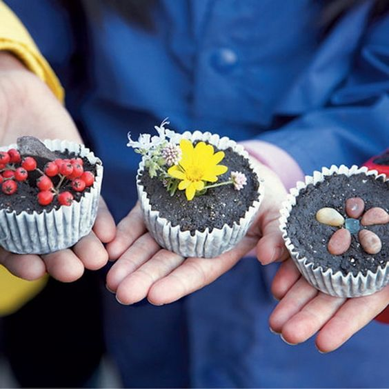

도심 속 자연의 쉼터
전주 수목원
도로와 도시의 변화에도 불구하고 고향의 풍경과 추억을 간직한 공간입니다.
더 많은 시설과 다양한 식물 자료를 보완하여 방문자들에게 추억과 지식을 전해드리겠습니다.
전주수목원의
주요 정보를 빠르게 확인하세요!
자주찾는 서비스
프로그램 예약
원하시는 프로그램 정보와 날짜, 시간, 인원을 확인하신 후 예약하시기 바랍니다.
- 

수목원 소식
더보기갤러리
더보기정보 & 즐길거리
오시는길
주소(54810) 전라북도 전주시 덕진구 번영로 462-45
전화063-714-7200
승용차 이용
전주IC 방면
호남고속도로(224m) 번영로(291m) 번영로(344m)
서전주IC 방면
호남고속도로(545m) 호남로(4.7km) 번영로(748m)
대중교통 이용
전주 고속·시외
버스터미널
금암1동주민센터 정류장
1001, 1002, 385, 386, 430 버스 승차
조촌초교 정류장 환승
마을버스 43, 48 승차
전주수목원 정류장 하차
전주역
전주역 종점 정류장
조촌초교 정류장 환승
마을버스 43, 48 승차
전주수목원 정류장 하차